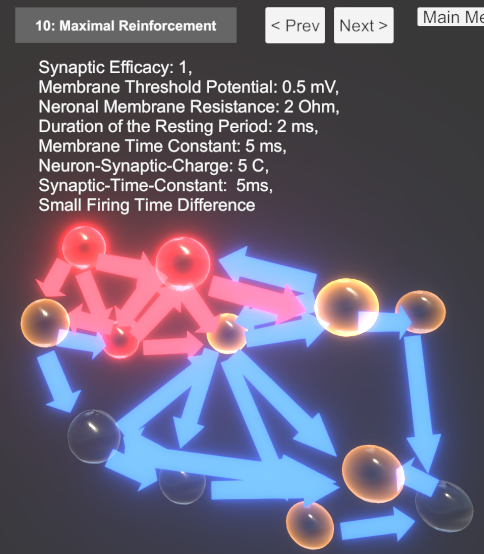

Für die Umsetzung habe ich die Unity-Game-Engine eingesetzt. Zum einen aufgrund des großen Spektrums der visuellen Echtzeit-Darstellung, zum anderen aufgrund bereits vorhandener Erfahrung im Umgang mit der Engine. Zusätzlich unterstützt Unity den WebGL-Export.
Ich habe mich an dem Code des Artikels „Leaky Integrate and Fire neuron with Tensorflow“ [1] von David Corvoysier für die Programmierung der Neuronen und Synapsen orientiert, welcher mir zudem das notwendige Hintergrundwissen von LIF-Modellen vermitteln konnte.
Für die Steuerung habe ich mir das Spike Projekt [2] von Dmitry V'yal zum Teil als Vorbild genommen.
Die visuelle Präsentation orientiert sich teilweise an dem Projekt von Steven de Salas, welches im Artikel „Asynchronous Neural Networks in JavaScript“ vorgestellt wird [3] [4] [5]. Ebenso diente die Anwendung Neuronify [6] als Vorbild.
[1] http://www.kaizou.org/2018/07/lif-neuron-tensorflow.html
[2] https://github.com/akamaus/Spike
[3] https://desalasworks.com/article/asynchronous-neural-networks-in-javascript/
[4] https://sdesalas.github.io/fusspot/
[5] https://github.com/sdesalas/botbrains
[6] https://ovilab.net/neuronify/
Die Aufgabe bestand darin, eine interaktive Animation zum visuellen Experimentieren mit einem Spiking Neural Network (SNN) zu erstellen.
Zu diesem Zweck habe ich zwei verschiedene Unity-Szenen erstellt, die vom Nutzer folgendermaßen auswählbar sind.
Abbildung 1: Auswahl der zwei Unity-Szenen
In der ersten Szene, siehe folgende Abbildung, kann der Nutzer Neuronen und Verbindungen zwischen Neuronen manuell erstellen, zur Bedienung wird eine Hilfe-Funktion bereitgestellt.
Abbildung 2: Manuelle Erstellung von Netzwerken
Neuronen und Verbindungen sind auswählbar, woraufhin die zugehörigen Parameter dargestellt werden und über Buttons einstellbar sind, siehe Abbildung 3.
Abbildung 3: Ausgewähltes Neuron
Der Fire-Button ermöglicht ein Feuern des ausgewählten Neurons hervorzurufen. Die Buttons - und + verringern und erhöhen die angegebenen Parameter. Das Membranpotential, der Eingangsstrom und der Index der Pre-Synapse, von welcher ein Spike kommt, werden jeweils in Grafen über die Zeit dargestellt. Die Simulationsgeschwindigkeit ist zusätzlich über einen Slider einstellbar, standardmäßig ist jeder Zeitschritt t = t + dt mit dt = 1. Es wird ein Sound abgespielt, sobald Neuronen feuern – diese Sounds sind über den Mute-Button deaktivierbar. Über den Main-Menu-Button gelangt der Nutzer wieder zurück zur Szenen-Auswahl.
Über den Button Premade Examples der Szenenauswahl gelangt der Nutzer zu folgender Darstellung.
Abbildung 4: Premade Examples
Hier habe ich eine Blob-Architektur aus Neuronen und Verbindungen erstellt, jedes Neuron hat eine bestimmte Wahrscheinlichkeit mit einem bestimmten anderen verbunden zu sein. Ich habe daraufhin jeweils das gleiche Netzwerk mit unterschiedlichen voreingestellten Parametern versehen, um deren Auswirkung auf das gesamte Netz beobachten zu können.
Zwischen den unterschiedlichen Beispielen kann der Nutzer mit den Buttons < Prev und Next > navigieren. Außerdem ist es möglich die Kamera, über Gedrückthalten der rechten Maustaste und bewegen der Maus, zu rotieren und, mit den Tasten W A S D, zu bewegen.
Auch in dieser Szene sind die Neuronen und Verbindungen auswählbar, um auch hier die Parameter nach belieben einzustellen oder über die Grafen, wie folgt, zu beobachten.
Abbildung 5: Ausgewähltes Neuron in einem Blob
Diese entstehen durch Verstärkung beziehungsweise Dämpfung. Ein Aufschaukeln des Netzwerks in eine Aktivitätsübersättigung kann unterschiedlich bewältigt werden. Zum einen bewirkt die Erhöhung des Neuronal-Membran-Resistance das Membran-Potential, sobald eine Pre-Synapse einen Spike liefert. Wird zudem das Membrane-Threshold-Potential verringert, wird ein Spike bereits mit geringer Spannung hervorgerufen. Je geringer die Membrane-Time-Constant sowie Synaptic-Time-Constant (auf der Neuronenverbindung einstellbar) desto langsamer wird die Spannung an dem Neuron abgebaut. Eine geringe Resting-Period-Duration bewirkt eine kürzere Zeit in der Resting-Phase, nachdem ein Neuron gespiked hat. Ist zudem das Membrane-Resting-Potential erhöht, liegt eine Spannung nach der Resting-Phase des Neurons vor, welche bereits näher an dem Spiking-Threshhold liegt und demnach ein geringerer Stom nötig ist, um die Neuronen zum Spiken zu bringen. Ebenso tragen Erhöhung der Efficacy und Neuron-Synaptic-Charge der Verbindungen zu hohen Input-Currents bei. Ein geringer zeitlicher Abstand zwischen den Spikes von Pre-Synaptsen ist zusätzlich ein Faktor, welcher dazu beiträgt, dass die Spannung an Neuronen nicht so schnell abfällt.
In Beispiel 10 der Premade-Examples-Szene, siehe folgende Abbildung, wurden diese Werte eingestellt.
Abbildung 6: Beispiel Maximale Verstärkung
Damit Signale insgesamt immer weiter nachlassen, kann im Prinzip genau gegenteilig vorgegangen werden, das Ergebnis ist in Beispiel 11 zu sehen, siehe Abbildung 7.
Abbildung 7: Beispiel Maximale Dämpfung